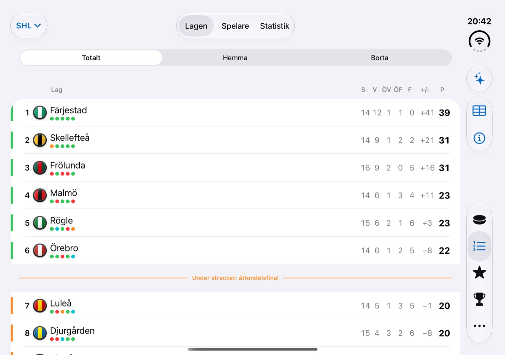
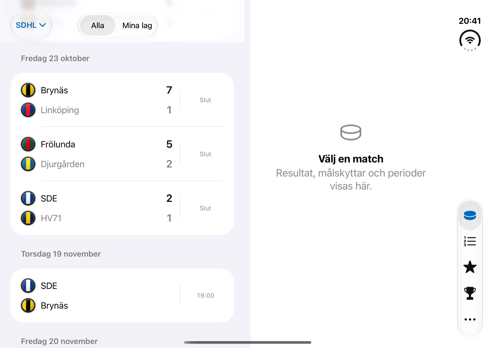
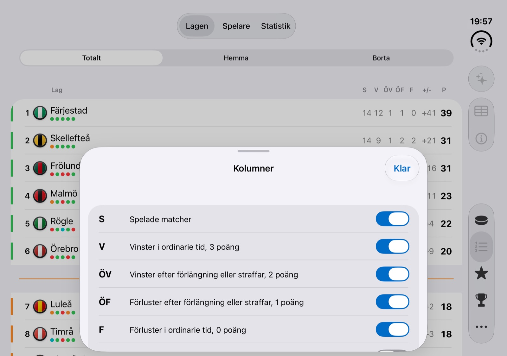
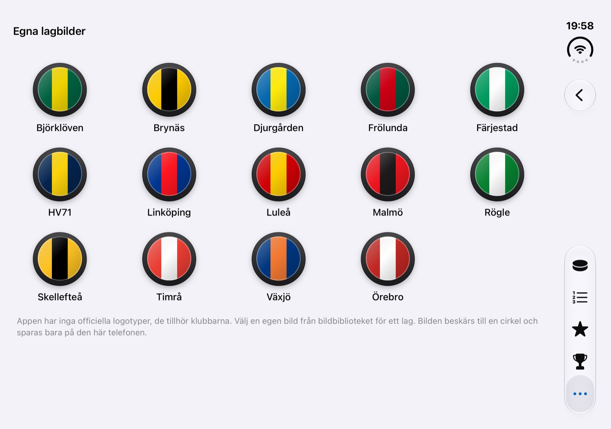

Puckkoll
Your team in the SHL, SDHL or HockeyAllsvenskan, on every screen you own: the schedule, the score as it changes, the table and a notification when it counts.
In TestFlight beta · iOS 26 or later
The SHL table in Puckkoll on an iPhone Duo, in the Xcode simulator.
Made for the game night
What you want to know about your team, and nothing you did not ask for.
Goals, the moment they happen
Notifications for goals, puck drop, intermissions and the final whistle, chosen team by team. A Live Activity keeps the score on your Lock Screen, and a widget and an Apple Watch app show the next game.
Tipset: tip with friends and family
Tip the result of each game, join a group with a code and see a leaderboard for the season and the week. Everyone is a made-up nickname, and it is switched off until you turn it on.
The table, your way
Home and away tables, form dots and the places that decide the playoffs. Pick which columns to show, from played games to goals for and against.
Pucks for badges
Every club is a puck in its own colours. Prefer the classic disc with the club code, or a picture of your own on any club? Both are in the settings.
Three leagues
Switch between SHL, SDHL and HockeyAllsvenskan from the menu at the top. HockeyAllsvenskan has goals and penalties like the SHL; SDHL has the schedule, results, table and player statistics. Notifications and Tipset are for the SHL so far.
Private by design
No accounts, no ads and no tracking. The server only knows what it needs to send you a notification. Read the privacy policy.
A look around
Swedish by default, English if your phone is. Light or dark, in the colours of your team.



The details
What is in the app today.
Follow
- The whole schedule, grouped by day, with live games ticking
- A game page with the scoreboard, goals, penalties, shots, line-ups and a match timeline
- Tables for all games, home and away, and season statistics for players and goalkeepers
- A recap after the game, written on your iPhone by Apple Intelligence where it is available
- Spoiler-free mode that hides the result until you tap it
Stay updated
- Notifications for goals, line-ups, puck drop, intermissions, the final whistle and a game recap, set per team
- Players you follow: their goals, assists and penalties
- Live Activities, a Home Screen widget, Lock Screen widgets and an Apple Watch app
- An optional 30 second delay, so a game you watch on TV is not spoiled
- Add a game to your calendar with one tap
Requirements
- iPhone with iOS 26 or later; iPhone Duo is supported with its own layout
- Swedish and English
- Notifications, Live Activities and Tipset use the Puckkoll server and are for the SHL so far
- Available through TestFlight
Join the beta Get support Privacy policy Integritetspolicy (svenska)